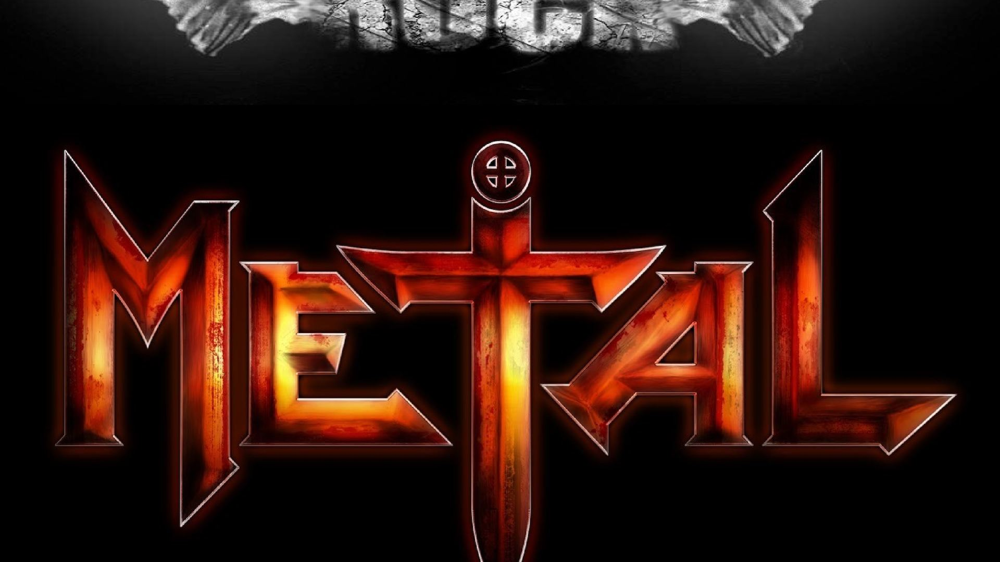

Somos un grupo de entusiastas de la música dura. El heavy es nuestra vida y queremos ampliar la necesidad por el gusto a la buena música, pero a esta música. Música y alma nada edonista, nihilista, egocentrica..., calificativos que le podemos inferir a la música masivamente escuchada en estos momentos. El heavy, rebelde, reivindicativo, luchador, y nada conformista, contrario a esta sociedad cada vez más epicurea en la que nos estamos convirtiendo, es lo que nos mueve. Por eso, nos hemos juntado varias chavales con gustos en común pero que no se ponen deacuerdo con el estilo a usar en el bello arte de tocar el mejor y más versatil instrumento dentro de un grupo de rock, la BATERIA.
Cada uno de nosotros, influidos por la trayectoria musical que nos ha llevado hasta aquí, se identifica con un estilo diferente, tomando como referente o guía espiritual a los mejores en cada uso de las BAQUETAS. Los más jovenes se identifican con las estrellas más actuales, algunas ya fallecidas por desgracia, y los más carrozas, con los antiguos, con sus estrellas que no dejarán nunca de brillar, siendo fieles hasta el final. Salimos de años de conservatorio, y la mayoría de nosotros con mucho rodaje en las espaldas y sobre todo en las venas.
El heavy metal nació el 13 de febrero de 1970: el día en que apareció el primer disco del grupo de Birmingham Black Sabbath. Birmingham, en el norte de Inglaterra, era una zona industrial, y los cuatro componentes de Black Sabbath eran veinteañeros de clase obrera que habían trabajado en fábricas de la zona (algunas, curiosamente, dedicadas a la extracción y producción de metal) “A estos cuatro chavales la vida les deparaba un futuro de duro trabajo en fábricas, borracheras importantes en pubs locales y poco más. La música era su válvula de escape. Una huida de la rutina. Un atisbo de algo distinto, tal vez de una vida lejos de la cadena de producción”.
El heavy era una forma perfecta de escapismo. No hay que olvidar que la música es una forma de representar las emociones y nuestras inquietudes. Una rama del heavy es el Black Metal, considerado un estilo que aborda de forma bastante radical, consideraciones sobre la libertad, las creencias y el sometimiento a reglas impuestas en decadas pasadas. Es la última línea de la expresión más salvaje de lo racional. Hay estilos más allá, como el Grincore, Brutal Death Metal, Noise, que llevan la degeneración por banderala tierra.
Aqui nos tienes. Pincha en uno de nosotros y sabrás un poco más sobre quienes somos. Queremos crear piña, unión, hacer grandes amigos e incluso proyectos. Quien sabe, si alguno merecedor de reconocimiento sin tener que tocar a las puertas de los 40 principales, o sony music, o cualquiera de esos que están detrás de la última tendencia para usarnos y escupirnos cuando no les sirvamos. Ven a conocernos y seguimos hablando de esto, o tomarnos unas cervezas en nuestro "bar" hablando de música durante horas. Una vez decidas un MAESTRO estarás con él, el tiempo que decidad, eso sí, con el compromiso con la música que exigimos. Date una vuelta por la sección Nuestras Clases y allí te explicamos como va la movida. Lo mismo en la sección Formulario para contactar con nosotros.